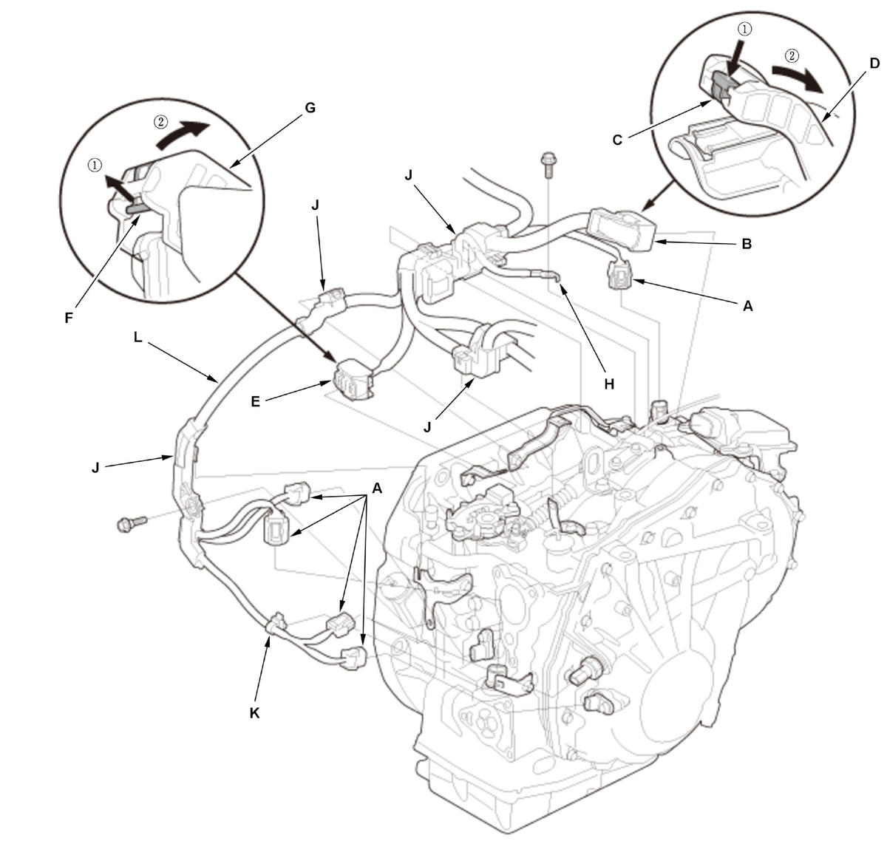
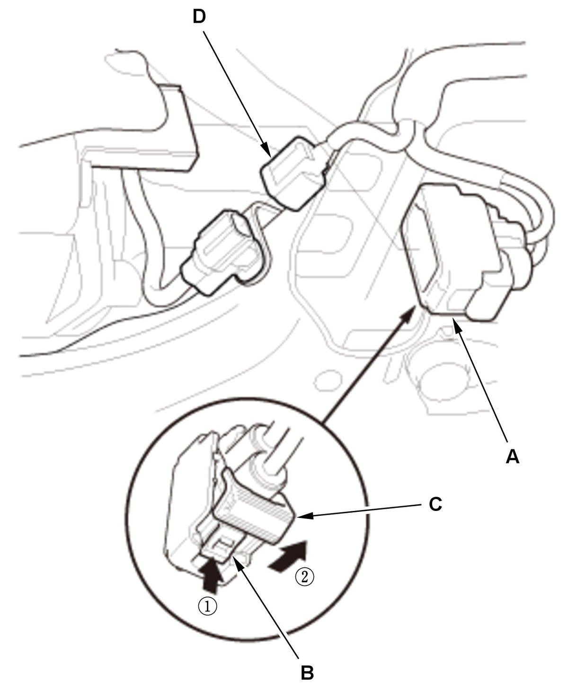

CVT Transmission Removal and Installation (L15B7/L15BA/L15BY (CVT)): Removal
NOTE:
- Use fender covers to avoid damaging painted surfaces.
- Keep all foreign particles out of the transmission.
- Special tool Reds engine support hanger AAR-T1256 must be used with the side engine mount installed.
- Vehicle - Lift Set
- Engine Undercover - Remove
- Engine Undercover Lid - Remove (With Engine Undercover Lid)
- Engine - Warm Up
1. Start the engine, and warm it up to normal operating temperature (the radiator fan comes on twice). 2. Turn the engine off.
- Transmission Fluid - Drain
- Vehicle - Lift Down
- Steering Joint - Disconnect
NOTE: Hold the steering wheel with the steering wheel holder tool.
- Front Wheel - Remove (Both Sides)
- Front Grille Cover - Remove
- Air Cleaner - Remove
- 12 Volt Battery - Remove
- 12 Volt Battery Base - Remove
- CVTF Warmer - Remove
1. To prevent damage, cover the connector (A) located under the CVTF warmer (B) using a shop towel.
2. Remove the CVTF warmer with the O-rings (C) without disconnecting the CVTF warmer hoses.
NOTE: The CVTF warmer is aluminum part. Be careful not to damage the CVTF warmer.
3. Put plastic bag over the CVTF warmer, then swing it out of the way.
4. Remove the CVTF warmer strainer (D) with the O-ring (E).
5. Clean the CVTF warmer strainer if necessary. Replace the CVTF warmer strainer, if it is clogged or damaged.
- Do not use compressed air to clean the CVTF warmer strainer.
- Soak the CVTF warmer strainer thoroughly in transmission fluid.
- Intake Air Duct E - Remove
- Intake Air Duct F - Remove
- Engine Wire Harness - Remove
1. Disconnect the connectors (A).
2. Remove the ground cables (B).
3. Remove the harness covers (C) and the harness brackets (D), then swing the engine wire harness (E) out of the way.
- TCM Harness - Remove
1. Disconnect the connectors (A).

Courtesy of HONDA, U.S.A., INC.2. Disconnect the connector (B) by pushing the lock (C) and pulling the lever (D) in the numbered sequence shown.
3. Disconnect the connector (E) by pulling the lock (F) and the lever (G) in the numbered sequence shown.
4. Remove the ground cable (H).
5. Remove the harness covers (J) and the harness clamp (K), then swing the TCM harness (L) out of the way.
- Shift Cable (Transmission Side) - Remove
- Intake Manifold Bracket - Remove
- Engine Support Hanger - Install
NOTE: Be careful when working around the windshield.
1. Remove the front damper caps.
2. Install the universal lifting eyelet with an about 50 mm (2.00 in) commercially available spacer (A).
3. Install the engine support hanger onto the vehicle as shown.
4. Attach the hook (B) to the slotted hole in the universal lifting eyelet.
5. Tighten the wing nut (C) by hand, and lift and support the engine/transmission.
- Upper Transmission Assembly Mounting Bolt - Remove
NOTE: Refer to the Exploded View as needed during this procedure.
- Transmission Mount - Remove
- Vehicle - Lift Up
- Front Floor Brace - Remove (With Front Floor Brace)
- Exhaust Pipe A - Remove
- Connector (EPS Subharness) - Disconnect

Courtesy of HONDA, U.S.A., INC.1. Disconnect the connector (A) by pushing the lock (B) and pulling the lever (C) in the numbered sequence shown. 2. Disconnect the connector (D).
- Tie-Rod End Ball Joint - Disconnect (Both Sides)
- Lower Stabilizer Link Ball Joint - Disconnect (Both Sides)
- Lower Arm Ball Joint - Disconnect (Both Sides)
- Lower Arm Mounting Bolt - Remove (Both Sides)
- Front Brace - Remove
- Intake Air Resonator - Remove
- Torque Rod Mounting Bolt - Remove
- Front Subframe - Remove
1. Set the subframe adapter (VSB02C000016) on a transmission jack (A), line up the slots in the arms with the bolt holes on the corner of the jack base, and tighten the bolts. 2. Attach the subframe adapter to the front subframe (B).
- Transmission - Support
1. Support the transmission with the transmission jack. - Drive Plate - Disconnect
1. Remove the torque converter cover (A). 2. Remove eight torque converter bolts (B) while rotating the crankshaft pulley.
- Driveshaft Inboard Joint - Disconnect (Both Sides)
NOTE: Secure the driveshaft to the body with a nylon strap on both sides.
- Intermediate Shaft - Remove
- Lower Transmission Assembly Mounting Bolt - Remove
NOTE: Refer to the Exploded View as needed during this procedure.
- Transmission - Remove
1. Check once again that the transmission (A) is free of hoses and electrical wiring. 2. Hold the transmission on the transmission jack.
3. Lower the transmission by loosening the wing nut of the engine support hanger, and tilt the engine just enough for the transmission to clear its end from the side frame.
4. Slide the transmission away from the engine, then remove it from the vehicle.
NOTE: Be careful not to drop the torque converter.
5. Lower the transmission carefully.
- Torque Converter - Remove
1. Remove the torque converter (A). 2. Remove the dowel pins (B).
- Harness Bracket - Remove
1. If necessary, remove the harness brackets.
- Drive Plate - Inspect
1. Inspect the drive plate, and replace it if it is damaged .